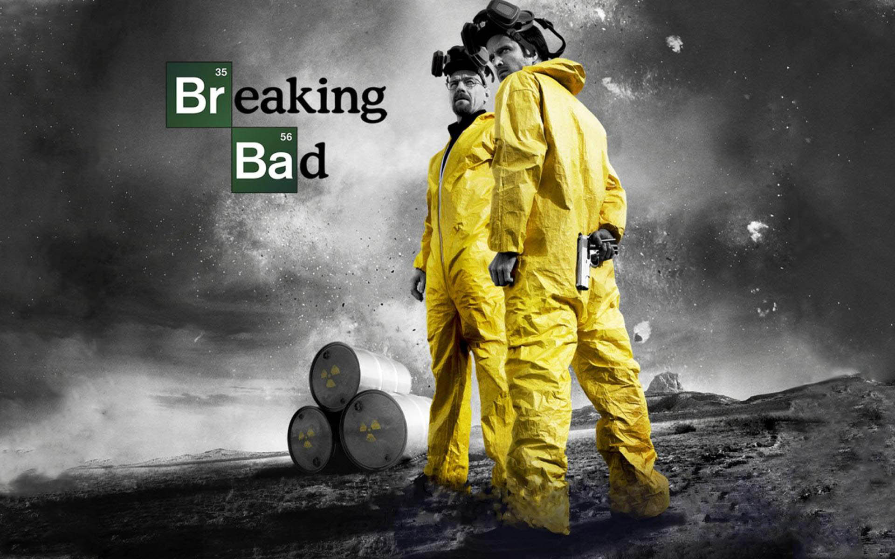
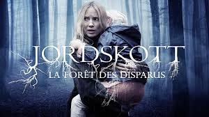

Après 14ans d'expérience professionnelle (conseil en stratégie, pilotage de plan de transformation, management de business unit digitale), j'ai décidé de monter ma Start-Up et de passer mon été au Wagon pour coder mon MVP.
|  |
Breaking BadWalter « Walt » White est professeur de chimie dans un lycée, et vit avec son fils handicapé et sa femme enceinte à Albuquerque, au Nouveau-Mexique. Lorsqu'on lui diagnostique un cancer du poumon en phase terminale avec une espérance de vie estimée à deux ans, tout s'effondre pour lui. Il décide alors de mettre en place un laboratoire et un trafic de méthamphétamine pour assurer un avenir financier confortable à sa famille après sa mort, en s'associant à Jesse Pinkman, un de ses anciens élèves devenu petit trafiquant. |
Silicon ValleyLa série décrit les aventures de quatre programmeurs vivant ensemble et essayant de percer dans la Silicon Valley, en Californie. Ils travaillent dans un incubateur d'entreprises, le Hacker Hostel, géré par Erlich Bachman. L'un d'eux, Richard Hendricks, va créer un algorithme de compression révolutionnaire qui sera très vite convoité par deux milliardaires : Peter Gregory et Gavin Belson. Richard doit choisir, vendre sa découverte au CEO de Hooli, Gavin Belson, ou bien laisser Peter Gregory investir dans sa future société en échange d'un retour sur les futurs bénéfices. |
|
|  |
JordskottEva Thörnblad est négociatrice au sein des forces spéciales de la police de Stockholm. Suite à la mort de son père, mais aussi à la disparition mystérieuse d'un jeune garçon, elle retourne dans la petite ville de Silverhöjd, où sa propre fille Joséphine a disparu sept ans plus tôt, sans que son corps ne soit jamais retrouvé. Convaincue qu'il existe un lien entre cette nouvelle disparition et celle de sa fille, Eva décide de reprendre l'enquête. |
Réalisée au Wagon